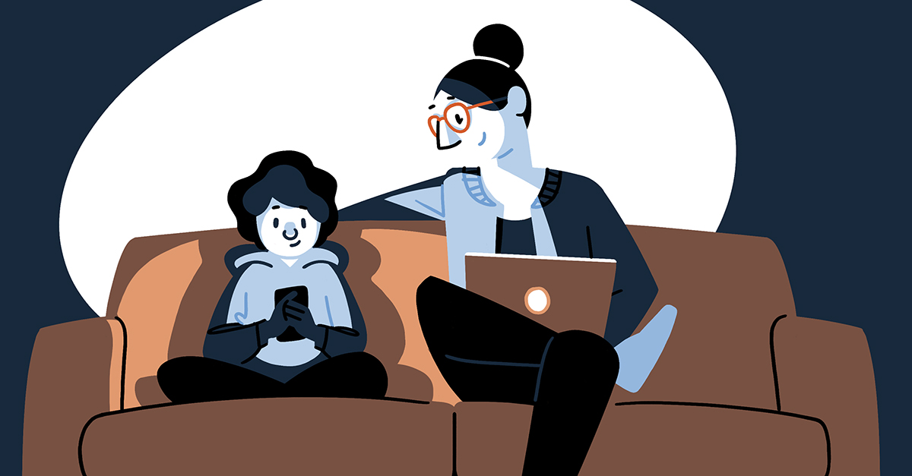

Råd om sosiale medier
| 1. Sett deg inn i avkrysningsvalg du har for å beskytte dine opplysninger. Ta deg tid til å teste ut hvordan de ulike profilinnstillingene virker i praksis. |
| 2. Gi ikke fra deg hele e-postadresseboka til aktørene bak nettsamfunnet, og i alle fall ikke passordet til din e-postkonto. |
| 3. Benytt en e-postadresse du uten større bryderi kan erstatte dersom du senere skulle oppleve å bli utsatt for spam, eller andre uønskede henvendelser via e-post. |
| 4. Du er selv ansvarlig for all informasjon du legger ut på profilen din. Legg ikke ut bilder eller personopplysninger om andre uten først å ha spurt dem om lov. |
| 5. Vær forsiktig med å legge ut opplysninger om politisk oppfatning, tro og seksuell legning om andre. Dette er i norsk og europeisk personvernlovgivning regnet som sensitive personopplysninger. |
| 6. Det du ikke ville sagt om deg selv eller andre i en større forsamling av kjente og ukjente personer, bør du heller ikke publisere på Internett. Opplysninger du gir i ”fortrolighet” til venner på din profil, kan lett bli klippet ut og benyttet i helt andre sammenhenger. |
| 7. Sjekk om de som står bak nettsamfunnet kan bistå deg med å få fjernet krenkende bilder og personopplysninger. Bruk muligheten om du finner åpenbart krenkende og sjikanerende innhold. Dersom innholdet er så ekstremt at det må fjernes raskt bør du kontakte politiet på hjemstedet ditt. |
